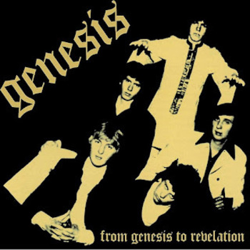
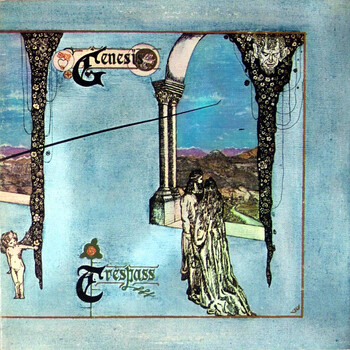
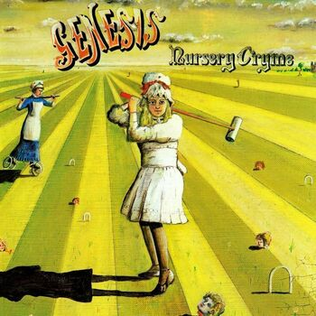
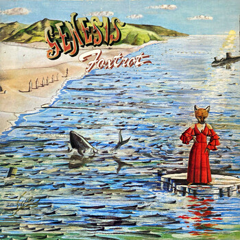
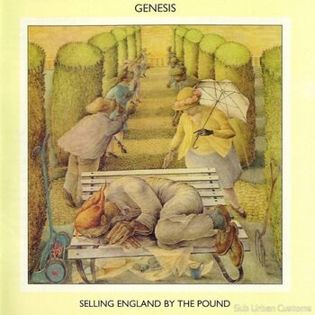
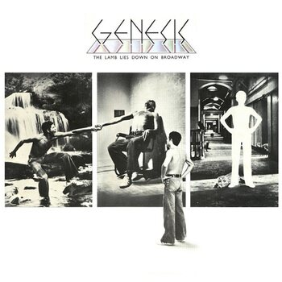

Background Music!
What This Website Is About.
On this website you can learn all about the Peter Gabriel Era of Genesis, which spanned from 1967 to 1975. I will go over all of the albums Genesis published during Peter Gabriel's time as lead singer (and occasional flutist), as well as tell you my ratings and opinions on each of his 6 studio albums with Genesis. You should also click on the images you see on this website to get an enlarged picture for your viewing experience!
Regarding Genesis.
If you listened to the radio between the 70's and mid 80's, you've most likely heard a Genesis song, they have been around since the late 1960's and have had a truly generational run in the music scene, particularly in the prog rock community. With the history of Genesis one would struggle to write a comprehensive history of the band, especially because the band can be divided into 2 separate and very distinct personalities. Even though Genesis can be a hard story to tell, it is worth telling.
The Roster
- Peter Gabriel (Lead Vocalist, Flute, Tambourine)
- Phil Collins (Drums, Backing Vocals)
- Tony Banks (Keyboard)
- Steve Hackett (Guitar)
- Mike Rutherford (Bass Guitar)
The Beginning
Genesis was founded in 1967 by a few schoolboys at the Charterhouse public school. The Genesis roster we know today is not the same roster that founded it back in 1967, but most of them did join up relatively early on, with Peter Gabriel being a founding member. Genesis found its start with a project manager named Johnathan King, who had an eye for the boys talent and convinced them to get started on making their first studio album, which leads us to our first album, "From Genesis to Revelation."
"From Genesis To Revelation"

Contents (lots of them)
- "Where the Sour Turns to Sweet"
- "In The Beginning"
- "Fireside Song"
- "The Serpent"
- "Am I Very Wrong"
- "In the Wilderness"
- "The Conqueror"
- "In Hiding"
- "One Day"
- "Window"
- "In Limbo"
- "Silent Sun"
- "A Place to Call My Own"
- "A Winter's Tale"
- "One Eyed Hound"
- "That's Me"
- "Silent Sun" (Again)
- "Image Blown Out"
- "She is Beautiful"
- "Try a Little Sadness"
- "Patricia"
Notes
"From Genesis to Revelation" is the first studio album that Genesis published, and as such, it has a very unique and experimental sound, unlike much of the rest of their work. I would say this album is an acquired taste, although it is far from my favorite Genesis album, I still find myself listening to it often. The album totals a whopping 21 songs, putting it just over an hour in length. I would put "From Genesis to Revelation" at #6 in my rankings, not at all because it is a bad album, but that what is to come is, in my opinion, much better.
"Trespass"

Contents
- "Looking For Someone"
- "White Mountain"
- "Visions Of Angels"
- "Stagnation"
- "Dusk"
- "The Knife"
Notes
"Trespass" is the second studio album that Genesis published. This album is still in the more elementary stages of Genesis although it does have a more coherent story that develops throughout the album. "Trespass" is a bit shorter than "From Genesis to Revelation" but that does not mean you get less out of it. The album totals 6 songs and a 43 minute runtime to boot. I would put "Trespass" at the #5 slot in my rankings, They're still developing at this time and they haven't yet achieved their signature sound, although this album was a good stepping stone.
"Nursery Cryme"

Contents
- "The Musical Box"
- "For Absent Friends"
- "The Return of the Giant Hogweed"
- "Seven Stones"
- "Harold the Barrel"
- "Harlequin"
- "The Fountain of Salmacis"
Notes
"Nursery Cryme" is the third studio album that Genesis Published. This album, in my opinion, is where Genesis really began to develop a sound for themselves. The album starts off with "The Musical Box", a 10 minute 29 second labor of love in which every member of the band gets their time to shine. "The Musical Box" definitely makes the album for me, with its slow build up and wild action, before its fade back into the background, making it the foundation for the rest of the album. After "The Musical Box" the album switches between a somber tone and a more whiney and load tone. "Nursery Cryme" is made up of 7 songs and has a runtime of 39 minutes, making it even shorter than "Trespass" time wise. I would give "Nursery Cryme" the #4 slot in the rankings because it showcases how Genesis has developed and learned from its previous albums up to this point.
"Foxtrot"

Contents
- "Watcher of the Skies"
- "Time Table"
- "Get 'Em Out by Friday"
- "Can-Utility and the Coastliners"
- "Horizons"
- "Supper's Ready"
Notes
"Foxtrot" is the fourth studio album that Genesis published. This album, in my opinion, is a great step up from "Nursery Cryme. Foxtrot contains one of the highest regarded prog rock songs ever, "Supper's Ready". "Supper's Ready" is the longest song that Genesis released, totaling 22 minutes and 54 seconds. That's almost half of the album that contains it! With Foxtrot totaling 51 minutes. "Foxtrot" also has 6 songs, the same as "Trespass". I would put "Foxtrot" at the #2 slot in my rankings, the production quality and writing is some of the best released during the Peter Gabriel era.
"Selling England by the Pound"

Contents
- "Dancing with the Moonlit Knight,"
- "I Know What I Like (In Your Wardrobe)"
- "Firth of Fifth"
- "More Fool Me,"
- "The Battle of Epping Forest,"
- "After the Ordeal"
- "The Cinema Show"
- "Aisle of Plenty"
Notes
"Selling England by the Pound" is the fifth studio album that Genesis published. This album is not my personal favorite but it does have some standout songs like "I Know What I Like (In Your Wardrobe)" and "The Cinema Show". This album totals 8 songs and has a runtime of 54 minutes. For me personally, "Selling England by the Pound" is at #3 on the list. It is a good album but it does not have the same kick as "Foxtrot".
"The Lamb Lies Down on Broadway"

Contents (lots of them)
- "The Lamb Lies Down on Broadway"
- "Fly on a Windshield"
- "Broadway Melody of 1974"
- "Cuckoo Cocoon"
- "In the Cage"
- "The Grand Parade of Lifeless Packaging"
- "Back in N.Y.C"
- "Hairless Heart"
- "Counting Out Time"
- "The Carpet Crawlers"
- "The Chamber of 32 Doors"
- "Lilywhite Lilith"
- "The Waiting Room"
- "Anyway"
- "Here Comes the Supernatural Anaesthetist"
- "The Lamia"
- "Silent Sorrow in Empty Boats"
- "The Colony of Slippermen(The Arrival/A Visit to the Doktor/Raven)
- "Ravine"
- "The Light Dies Down on Broadway"
- "Riding the Scree"
- "In the Rapids"
- "It"
Notes
"The Lamb Lies Down on Broadway" is the sixth and final album that Genesis published during the Peter Gabriel Era. This album is primarily written by Peter Gabriel, while the other albums released during his time with the band had songs written by various different band members. This album was Gabriel's goodbye to the band as he had just started a family and didn't have as much time to devote to touring and making albums with Genesis. The Lamb put a lot of strain on the band because of the way it was being made with Gabriel writing it mostly on his own, this led to some bitterness between the band members at the time, although it does not come through on the finished product. The Lamb totals 23 songs and has a whopping 1 hour 34 minute runtime. This album, in my opinion, is Gabriel's magnum opus, both with the band, and in his solo work. With that said, I would put "The Lamb Lies Down on Broadway" in the #1 slot in the rankings. I put this album here because of the story of its creation and success, and how it defines the Peter Gabriel Era so well.
Final Rankings
- The Lamb Lies Down on Broadway
- Foxtrot
- Selling England by the Pound
- Nursery Cryme
- Trespass
- From Genesis to Revelation
Conclusion
There you go! That's my comprehensive rating of every album that Peter Gabriel worked on with Genesis. If you have the need to get some Genesis merch you can visit their official store page! You can also access a Spotify playlist with the entirety of the Peter Gabriel Era of Genesis here!